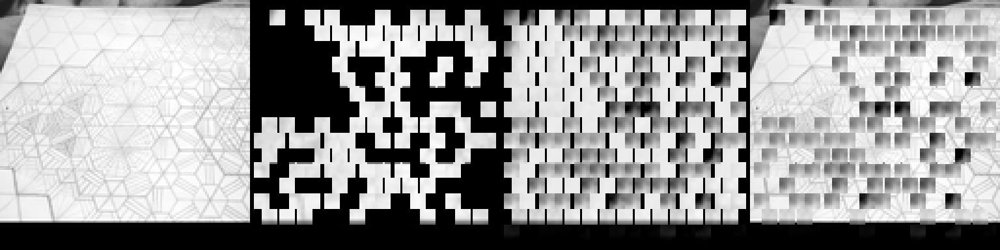

We study whether a small graph neural network can redraw the parts of a hand-drawn mandala it has never been allowed to see. The drawing is tiled by a hexagonal mesh, each node owns one 8×8 pixel patch, and a contiguous 45° sector — the wedge — is removed from every optimisation step. The model must reconstruct that sector from the remaining seven eighths. On a consumer phone CPU, a 405k-parameter network reaches r = 0.904 on the held-out wedge (MSE 0.00268, against a 0.01536 mean-patch floor), in 88 seconds of single-threaded training. Ablations show that angular harmonics in the edge messages, not the specific lattice, carry the gain: replacing the hexagonal mesh with a square grid changes r by less than 0.01, while removing the edge features or the edge gate collapses reconstruction. We release the checkpoint, the four drawings and a live browser demo in which the topology and the gates are visible while inference runs.
A mandala is a drawing that repeats itself around a centre. If a model can exploit that repetition, hiding a slice of the drawing should not hide information: the slice is implied by the rest. If it cannot, the best it can do is paint the average patch, and the slice is lost.
So the task is deliberately adversarial to memorisation. Three disjoint evaluation sets are carved from the same image: random train cells, different random val cells, and a contiguous wedge of 1/8 of the circle that is excluded from training entirely. The wedge is the only number we care about.
The image is 128×128 and greyscale. A hexagonal lattice with cell size 1/8 places 203 nodes over it; each node samples an 8×8 window, pooled to a 4×4 patch, so a node carries 16 intensities plus a visibility flag. Edges connect lattice neighbours (2,092 directed edges), and each edge is typed by its direction on the hex grid.
The network runs two anisotropic message-passing blocks per level over a three-level spatial pyramid: it coarsens the mesh twice, then climbs back, fusing coarse context into the fine grid at every step. Edge messages are modulated by the edge type through a small set of angular harmonics — a Fourier basis over the six hex directions — plus an RBF encoding of relative position. A learned gate multiplies every edge message, so the model can close an edge it does not trust. Four attention heads split the 64 channels; each head learns its own gate, and the demo colours every edge by the head that routes the most attention through it. A shared patch head decodes 16 values per node.
Training is plain PyTorch, no graph library in the critical path, Adam at 3e-3, 400 steps, dropout 0.1, one CPU thread. The whole run is 88 seconds on the phone that serves this page.

Random masking leaks: a hidden cell is usually surrounded by visible ones, and a local smoother can interpolate it. A contiguous sector cannot be interpolated from its immediate neighbourhood — information has to travel around the circle, which is exactly what message passing is for. The wedge metric therefore separates “interpolation” from “symmetry completion”.
| Run | wedge r ↑ | wedge MSE ↓ |
|---|---|---|
| hex mesh, 400 steps (this demo) | 0.904 | 0.00268 |
| hex mesh, 2 seeds | 0.896 | 0.00280 |
| same nodes, rewired edges | 0.878 | 0.00325 |
| square grid mesh | 0.960 | 0.00235 |
| star mandala + rings (61 nodes) | 0.742 | 0.00553 |
| no edges (spatial pooling only) | 0.730 | 0.01770 |
| strict MLP, depth 1, no edges | 0.000 | 0.02860 |
| mean-patch floor | — | 0.01536 |
The grid “win” is a tiling artefact. With circular patches, hex (0.989) and square grid (0.990) are indistinguishable, and the no-edge control falls to 0.882 — the lattice is not the source of the gain.
| Knob | wedge r |
|---|---|
| harmonics 0 / 2 / 4 / 8 | 0.238 / 0.870 / 0.888 / 0.901 |
| depth 1 / 2 / 3 / 4 | 0.844 / 0.877 / 0.888 / 0.881 |
| edge gate on / off | 0.888 / 0.078 |
The cockpit behind this sheet runs the checkpoint in the browser's host process. Ask it to hide a sector, or just say hello: the server masks cells, performs one forward pass, and returns the predicted patches, every per-head edge gate, and a BFS hop count from the nearest visible cell. The canvas colours each edge by its dominant head, the meters on the right show each head's share of the attention in that pass, and a wave of halos travels outward from the visible cells by hop distance — the visible half of the computation, not a replay.
pip install -r requirements.txt python -m mandalanet.train \ --drawing drawings/hex-tessellation.jpg \ --mesh hex --steps 400 --out runs/main-hex python -m mandalanet.serve --port 8000
Source, runs and this page: github.com/BoogerCheeseOnRye/mandala-gnn. No GPU, no graph library, no build step.